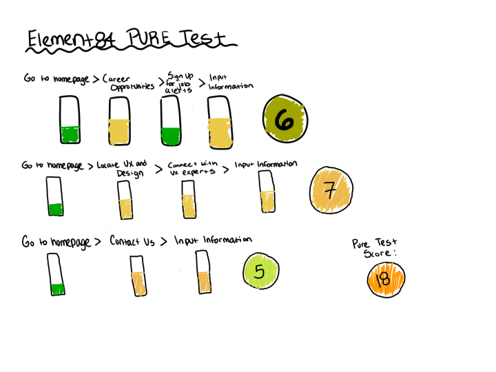
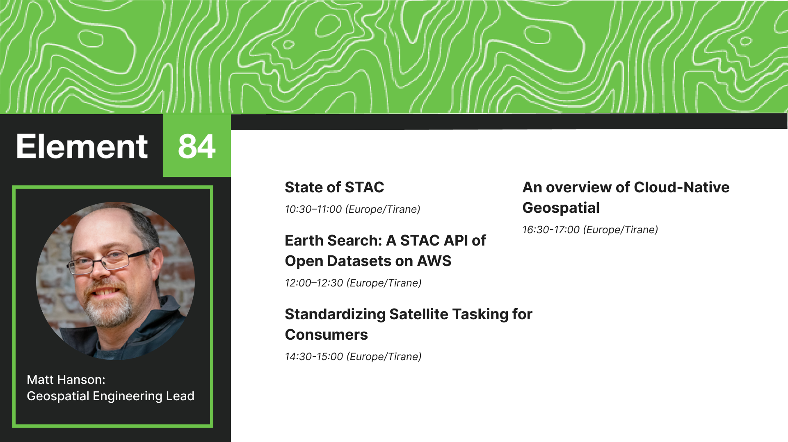
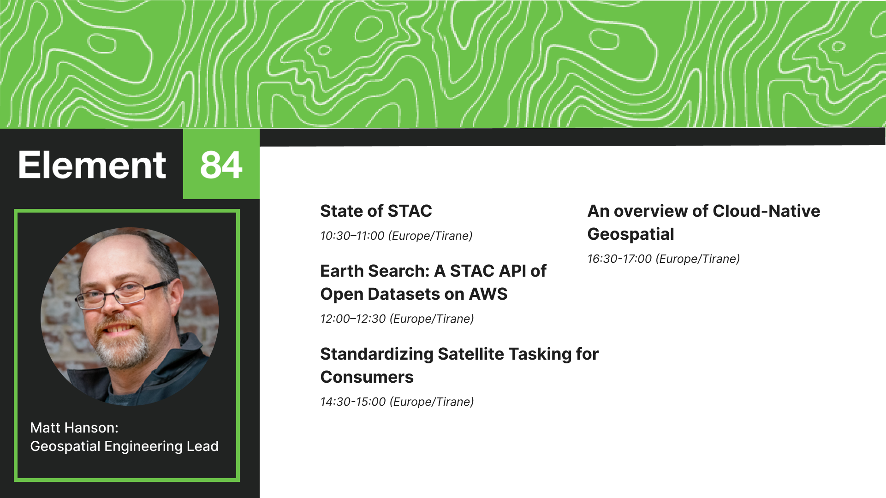

PURE Analysis
PURE Test I performed through three happy task paths on Element84.
First, I went to the homepage, which required no cognitive effort because it opens automatically when users visit the site. I then had to find career opportunities by scrolling down the homepage, which took a bit of brain power. After that, locating the sign-up for job alerts tab was easy since it was on the career opportunities landing page. Finally, inputting my contact information was the last step, which took a bit of cognitive effort but not much since it’s information I am familiar with.
Next, I went to the homepage, located ux and design, connected with UX experts, and input my contact information. The homepage required the same amount of cognitive effort as the first test. Locating UX and design, and connecting with UX experts, also took the same amount of cognitive effort, since I had to scroll through the site for both to find them. Inputting my contact information was the same amount of cognitive load.Lastly, I went to the homepage, clicked on "Contact Us," and input my information. Finding the contact us page required less cognitive effort since I had seen it in my previous attempts. However, it may take some time for a first-time user. Inputting the contact information was the same amount of cognitive effort as in the last tests.
Website Screenshots


Design Concepts
 
